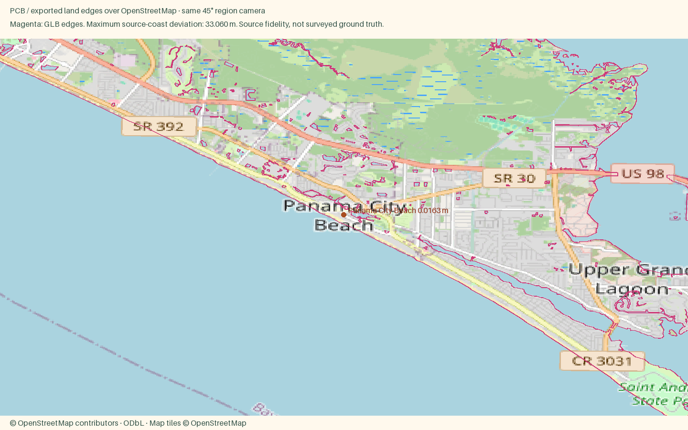

Panama City Beach
Open atlas · Accuracy CSV · Sourced medians
Region
Panama City Beach
Open districtBig beaches, big energy and a lot going on after dark.
Source alignment

Manual fixes
- City-specific package requested by user; other cities in the parent region remain unchanged.
- Expanded the dated OSM building acquisition westward to cover the requested waterfront and neighborhoods; shared exporter unchanged.
- Russell-Fields Pier deck uses the actual OSM way geometry, rendered by the existing footbridge recipe.
- Input camera fitted to both geographic axes; Census background context extended to cover the wider region frame. Geometry and style implementation unchanged.
Landing export comparison
Town context and Street close view use the same hero point. Compare both zooms · Town phone crop · Street phone crop